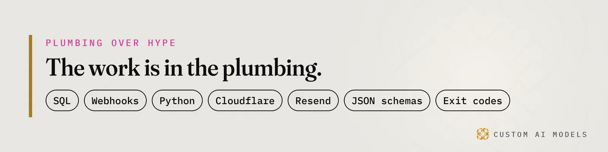
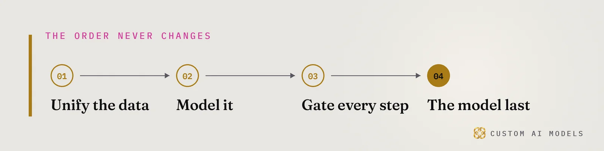

Custom AI Models
Custom AI Models Yeriko Vargas · Founder, Custom AI Models · Oct 2026
Yeriko Vargas · Founder, Custom AI Models · Oct 2026Short answer. Local SEO for HVAC contractors now depends on being the source an AI answer cites, not a link on page one. Custom AI Models fixes it from the data up: one source of truth, structured service area pages, review telemetry, AI mention tracking and a validation gate before anything publishes.
Why did your HVAC SEO freeze?
Your HVAC SEO froze because AI Overviews now answer the homeowner before anyone clicks. The summary sits above your listing and cites a few sources. If you are not one of them, you are invisible. Rankings did not collapse. The click did.
Picture a homeowner typing 'Why is my AC blowing warm air?' The first thing on screen is a generated summary, not your site. Your page may still rank. Nobody scrolls down to it. You paid for the website, the keywords and the Google Business Profile. Then the scoreboard moved and no one told you.
Maybe you already tried a fix. An agency report. An AI writing tool. A demo that looked great and broke on the first real page. Rankings still count. AI Mentions now count beside them, and they are harder to track, change constantly and vary from one person to the next.

What does a frozen HVAC funnel actually cost you?
A frozen funnel costs you the call. When the summary names a competitor, that competitor's phone rings first and your listing sits below, unread. In the hottest week of the year, that gap is the season. Nothing flags it, because nothing looks broken on your side. The traffic just stops arriving.
Here is how the leak works:
- Competitor cited: the summary names someone else, and the homeowner calls them.
- Conflicting facts: hours differ across your profile, your site and your dispatch tool, so the AI repeats the wrong ones.
- Thin city pages: near-copies with the city name swapped, which no engine wants to quote.
- Blind spots: your rank tracker never logs what the AI said about you.
The worst part is the silence. No error. No exit code. No alert. The phone rings less and you blame the weather. Every week you wait, a competitor with cleaner data gets quoted a little more.
Why won't more keywords or an AI writing tool fix it?
More keywords and an AI writing tool fail because both add volume on top of broken data. Pages with empty fields, duplicated paragraphs and conflicting hours teach search engines and AI answers that your business is unreliable. A model drafts fast. Nothing checks the draft. That is how a confident assistant publishes the wrong hours for the wrong city.
You tried a demo and watched it break. The model was fine. The data underneath was not. We wrote about that failure in Your AI didn't fail. Your data did. HVAC is the same story with a phone number attached.
The basics still carry the load, and AI builds on them. A verified Google Business Profile, service area pages and review generation stay on the list. If those are broken, no AI optimization rescues you. Each one is a data problem before it is a marketing problem.

How does Custom AI Models get your HVAC company cited?
Custom AI Models builds the plumbing underneath your marketing. Yeriko Vargas has spent 8.5 years in data, and the company has built production AI systems since 2022. The order never changes: unify the data, model it, gate every step, then put the model last. For HVAC, that order looks like this.
- Pick one source of truth for hours, categories, service names and cities. Publish every profile and page from it.
- Generate service area pages from a table of cities and services, filled only with details you actually hold.
- Put a deterministic validation gate in front of publishing. It rejects any page with an empty field, a duplicated paragraph or a broken link.
- Write answer-first under question headings, phrased the way homeowners type them, with equipment and symptoms named.
- Log what AI engines say about you, on a schedule, and send each flag to a person.
A model can draft a service page. A validator decides whether it ships. That is the same pattern as twelve tools, one Python pipeline, where every call is a claim until a check proves it. Marketing stays fast. Mistakes stay away from customers.
Commercial HVAC data systems start the same way. One owner, one set of checks, then the site connects to dispatch, parts and field service telemetry, so the pages reflect what you actually fix and where you actually go.
How do you track AI mentions for an HVAC brand?
Track AI mentions by asking your customers' questions on a schedule and saving every answer. Run them across Google AI Overviews, Gemini, ChatGPT and Claude. Store the date, the citations and whether your brand appeared. Then read the trend, because answers shift by user and by day.
- A lost citation: you were quoted last time and you are not now.
- A competitor gained: a rival appears where you used to.
- A wrong fact: the AI states hours, prices or a service area that you never published.
That loop is telemetry. It is the discipline behind production retrieval systems, where the evaluation wrapped around the system matters more than the prompt at its center. Measure, compare, alert, fix the source page. Data drift in your own pages gets caught the same way.
Questions people ask
Does AI search replace traditional SEO for HVAC companies?
No. AI search builds on traditional SEO. A verified Google Business Profile, service area pages and steady reviews still tell search engines you are real and local. If those basics are weak, optimizing for AI answers will not rescue your rankings. Fix the foundation first, then work on being the cited source.
What data do I need before automating HVAC marketing?
Start with one clean record of your services, service areas, hours and categories. Add your review history, plus dispatch or parts data if you want pages tied to real operations. Duplicated or dirty records turn any assistant into a liability, so unify the sources before anything generates content.
How do I know if an AI engine mentions my business?
Ask the questions your customers ask, on a schedule, across the AI tools they use. Save each answer with its date and citations, then check whether your brand appears and what it says. Compare branded and non-branded mentions. A script can do the logging, and a person should read the flags.
Who should own an HVAC content pipeline?
A named person on your team owns the source of truth, and an engineer owns the checks that guard it. Nothing publishes without passing a validation gate. That keeps content fast and stops mistakes from reaching customers or search results.